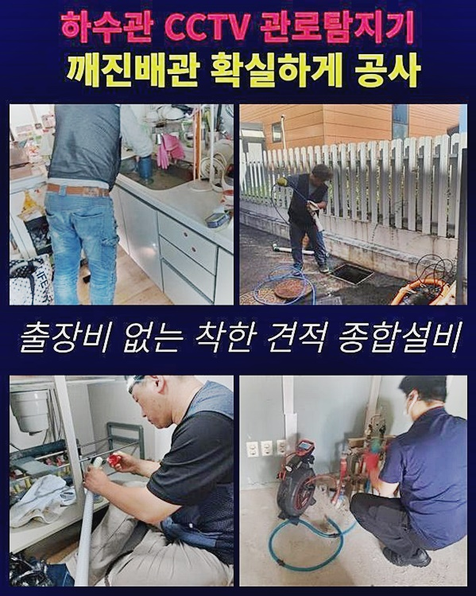
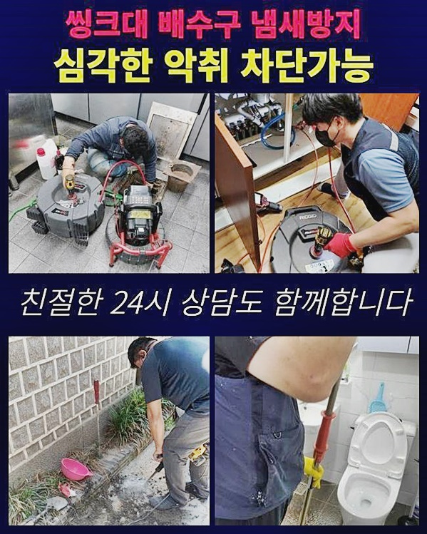
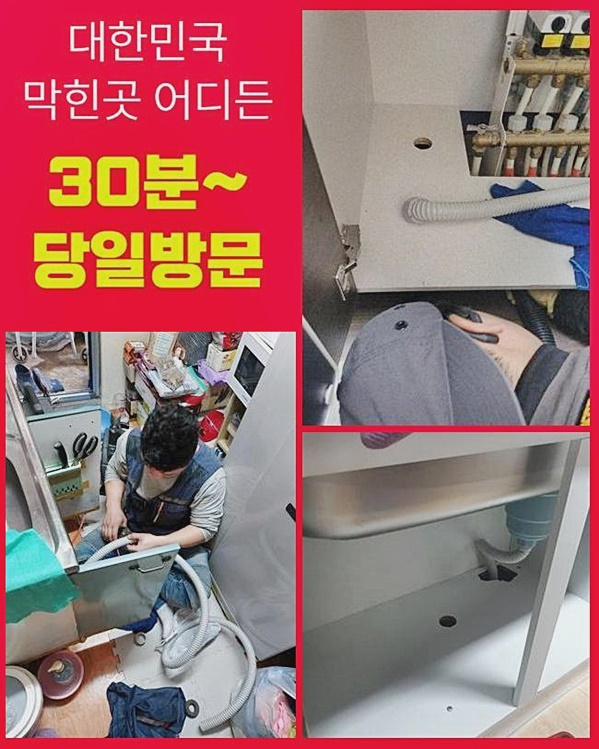
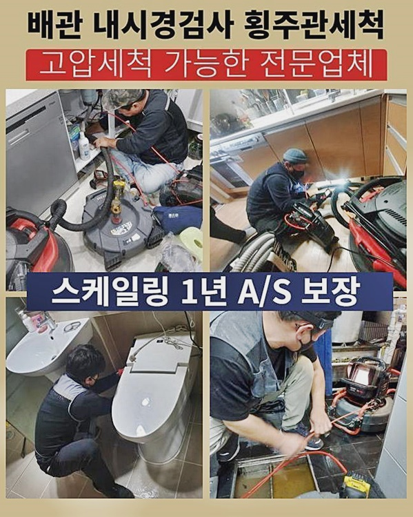
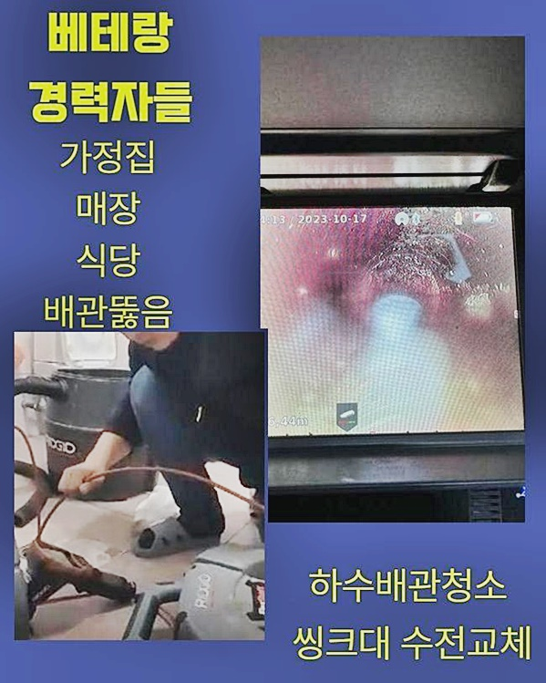
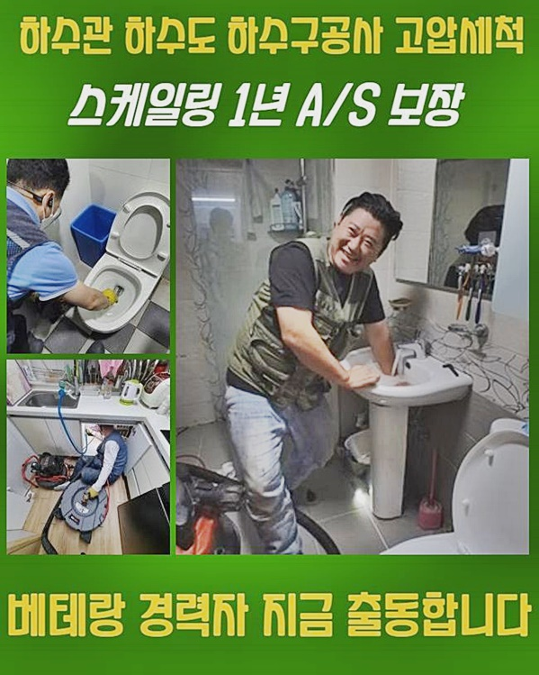

🏠 천안 성황동하수구막힘 안서동 고압세척비용 누수공사
천안 싱크대막힘 전문 시공 후기

📋 작업 개요
- 위치: 천안
- 서비스 유형: 싱크대막힘, 하수구막힘, 배관막힘, 누수수리, 역류해결, 뚫는업체, 배관청소, 고압세척, 설비공사
- 작업 일시: 2024. 7. 20. 16:22
- 업체명: 하수구수사대 (010-5615-2118)
🔍 문제 상황
인사올립니다
하수파이프 막힘의 문제 구역이라면 어디든지 염려없이 방문드리는 배관막힘 해결전문가입니다
지난주에 의뢰인께서 다목적실 하수배관에 장애가 생겼다고 연락을 주셨기때문에 발생장소에 찾아뵈었어요
천안 성황동하수구막힘 안서동 고압세척비용 누수공사
물빠짐이 전혀 되지 않으면서 역한냄새도 발생하여 황급히 저희 전문가에게 요청하신 상태였죠
저희 베테랑은 관련 작업장에 찾아가서 배수가 안되는 장애의 근거를 알아보고 철저하게 개선하여 드렸습니다
어떤 단계를 거쳐 물막힘의 근원을 발견해 고치게 되었는지 같이 보면서 안내해드릴게요
혹시나 동일한 상황에 마주하게되면 놀라지말고 이제 살펴볼 정보를 숙지하면 유용하실거예요
저희 팀이 방문한 지역은 주거밀집지로 의뢰인 가정의 다용도 공간에 세탁기 배수관이 막혀서 고장났다고 이야기하셨어요
의뢰인의 설명을 듣고 상태를 체크해보니 불쾌한 냄새와 함께 구정물까지 역류가 발생하는 사태가 일어났어요
뚫기 이전에 명확한 사유를 찾아내기 위해서 배수구 악취는 어떤 시점부터 맡기 시작했는지 하나씩 질문드렸습니다

🔎 원인 분석
💡 전문가 진단: 정밀 진단 장비를 사용하여 슬러지의 고착 여부를 판명하고 타격/세척 작업을 실시했습니다.
고객님께서는 확실한건 아니지만 대략 한달 전쯤부터 물 배출이 느려지는 기분이었다고 어렴풋하게 생각난 그대로 전해주셨어요
하수파이프 막힘이 생기면 주로 돌연해 일이 벌어졌다고 판단하시겠지만 실제로는 이렇듯이 전조 현상이 있어요
그런데 이상황을 심각하게 여기지 않으며 무시하고 넘어가 결국엔 이와 같이 배수되지 않는 사태까지 나타나게 된거죠
생활용수를 쓰는 위치라면 하수관에서 발생하는 불쾌한 냄새가 아님에도 세면기나 싱크대등 역한 냄새가 발생할 수 있게 되죠
악취가 풍긴다는 것 이는 곧 배수관 내부에 더러운 물질들이 썩어가는 암시라고 여긴다면 문제들이 생겼다는 걸 쉽게 추측할 수 있어요
작업장에 방문해 하수관에 물을 부었더니 의뢰인께서 설명하신대로 세제거품들이 되돌아나오면서 고약한냄새도 퍼지기 시작했어요
이와같이 배수관 나쁜냄새가 풍기면 내부의 더러운 물질을 꺼내는 조치들이 요구되어 가장먼저 석션장치로 첫 흡입 조치를 실행하였습니다
석션도구는 보통 가정에서 사용하고 계신 깊숙한 곳에 찌꺼기 정리는 힘들지만 입구쪽에 있는 더러운 물질을 제거하는 것은 문제 없었습니다
저희 팀은 어떤 문제장소든 체계없이 여러 방법들을 추진하지 않고 차근차근 작업하며 필요없는 과정들을 건너뜁니다
하수관 내시경 기기를 배치할 수도 있겠지만 심각한 상태가 아니면 석션기구로 대체로 상황이 해결될 수 있기 때문입니다
전문기사가 발생장소에 방문후에 어느 방식으로 막힘장애를 해결하는지가 결론적으로 고객님들의 비용으로 계산되다보니 주의하고 있습니다
저희 팀은 어느 작업장이든 문제를 정확하게 밝혀내고 문제를 풀어나가는 동안 의뢰인의 지출 부분까지 고려하여 필요없는 과정을 진행하지 않습니다

🔧 작업 과정
먼저 석션기기를 사용해 배관안의 불순물을 청소하는 절차를 수행했더니 작은돌같은 이물질들이 확인되었습니다
불순물을 조사해보니 배수관의 나쁜냄새를 촉발하는 추가적인 오염물인 기름뭉치가 안쪽에 있다는 것을 추측하게 되었어요
그리하여 배수관 내시경도구를 동원해 막고있는 찌꺼기가 어디에 얼만큼 모여있는지 낱낱이 조사하기로했습니다
배수구 내시경기기는 얇고 긴 튜브 끝쪽에 램프와 카메라가 하나로 붙어있고 화면이 달려 있어요
좁고 어두운 배수구 안쪽 상태를 바로 살펴볼 수 있으므로 원인을 밝혀 철저하게 처리하도록 지원해주는 기구입니다
하수구 안에 투입해보니 불순물 덩어리들이 관찰되었고 침전물같은 것도 육안으로 확인되었습니다
저희 팀이 찾아간 현장은 하수구 내부 깊이 문제를 일으키는 찌꺼기는 하수관 세척기구가 진입하기 힘들어
길쭉한 관을 덧대어 연결한 다음 작업을 수행하거나 샤프트 기구를 활용해 분쇄한 후 씻어내는 작업을 실시합니다
저희 전문기사님은 이처럼 현장 노하우가 풍부해 문제를 파악해내는 데 문제 없고 원인을 진단해도 최적의 방식들로 처리가능하므로 의뢰인의 불안을 확실하게 처리해 드리고 있습니다
이런식으로 해결책이 정해지면 신속하게 배수관로 내부를 세척하며 오염물을 제거해 하수관 역한냄새로 인해 불편을 주는 막힘 문제들을 제거합니다
초기 실행하고 마치는 것이 아니라 수차례 다시 시도해 작업 후 물길이 제대로 배출되는지 물 흐름 검사로 점검하고
다시 하수도 내시경 장치를 투입해 체크하며 남은 물질들은 없는지 완벽하게 세척되었는지 조사하게 됩니다
우리 전문기사가 점검했던 장소는 수차례 장애상황을 촉발하는 원인을 조사하여 완벽하게 청결한지가 점검된다면 작업들을 마무리짓습니다
배관에서 꺼낸 이물질들이 이 정도로 많았기 때문에 고약한 냄새가 발생하고 오염물이 누적되면서 역류도 나타났습니다
이따금씩 부엌싱크대랑 이어진 배수관이면 조리하면서 생기게 된 기름 잔재들이 하수배관에 점점 들러 붙어가며 기름덩어리 혹은 음식물 잔해물이 보이기도 합니다
이럴때는 하수구 시스템이 세탁기와 주방싱크대의 배수구가 연결되어 있으므로 부엌 싱크에서 흘러나온 물이 세탁실 배수관으로 솟구치는 현상들이 일어나기도 합니다
이러한 사안은 고난도의 경우라서 저희 베테랑처럼 전문적인 업체만 해결할 수 있는 상태이기 때문에 고약한 냄새가 배수구에서 올라오면서 물이 흐르는 것이 순조롭지 않다면 같이 살핀 상황처럼 막힘이 생기기 전 징후임을 명심해주세요
막힘이 생기기 전 전문업체에 점검을 요청하신다면 방지하는 것이 가능한 사항을 명심하신다면 도움이 되실거예요


✅ 작업 완료
내방전에도 전화통화로 안내해드리고 있으며 방문뒤에 세심한 진단을 하여 의뢰인댁에 적합한 최적의 방안을 제공중입니다
올바른 해결책을 통해 배수문제를 풀어보시기를 제안드려요 혹여라도 불합리한 시공방법을 사용해 가정에서 처리를 해보려고 하시는데
반대로 문제를 더 나빠지게 하는 사례가 대부분이기 때문에 저희 전문기사님께 재상담을 종종 주시고 있습니다
가정내에서 해결이 된다면 무방하지만 상태가 악화되는 일을 예방하기 위해 우선 상담을 받는 것이 합리적인 선택입니다
전화 상담은 계속 운영하고 있으니 필요할땐 전화주시고 문제를 해결하시길 바랍니다



⚠️ 베란다 누수 및 방수 관리 방법
- ✅ 비가 많이 올 때 창틀 주변이나 아래층 천장에 얼룩이 생기는지 정기적으로 확인해 보세요.
- ✅ 우수관 주변 실리콘 마감이 들뜨거나 깨진 틈새가 있는지 손상 여부를 수시로 체크하세요.
- ✅ 베란다 바닥 타일의 줄눈(메지)이 소실되면 그 틈으로 물이 침투하여 누수가 유발됩니다.
- ✅ 누수 의심 증상 발견 시 방치하면 아래층 손실이 커지므로 즉시 전문가의 진단을 받으십시오.
💡 핵심 정리
- 확실한 장비 작업(내시경 점검 및 샤프트 스케일링)으로 원인을 뿌리 뽑습니다.
- 작업 후 1년 이내에 동일한 부위 재발 시 100% 무상 A/S 서비스를 보장합니다.
- 서울 · 경기 · 인천 전 지역에 24시간 언제든 긴급 출동할 수 있도록 항시 대기 중입니다.
❓ 자주 묻는 질문 (FAQ)
🚨 천안 싱크대막힘 문제로 고민이신가요?
정확한 원인 진단과 확실한 시공으로 재발 없는 해결을 약속드립니다.
24시간 긴급 출동 | 서울 · 경기 · 인천 전지역 | 1년 내 재발 시 무상 A/S